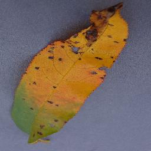
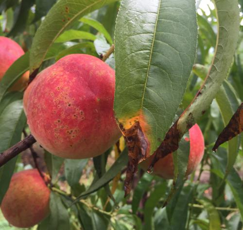
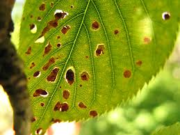
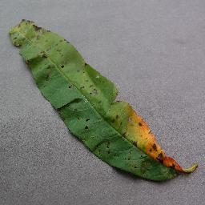

Bacterial spot, known also as bacteriosis, bacterial shothole, or shothole, is caused by the bacterium Xanthomonas arboricola. Although primarily a peach and nectarine problem, this disease also occurs on apricots, plums
and, to a lesser degree, cherries.
Numerous small spots form on the leaves. The spots are angular, purple to purplish-brown or black. Spots may merge and the centers may fall out, giving the characteristic “shothole”
appearance. Heavily infected leaves turn yellow and drop. Severe leaf loss early in the summer reduces fruit size and weakens the tree. A few lesions can result in severe defoliation on sensitive varieties; tolerant varieties may require
many more lesions for defoliation.
On fruits, tiny water-soaked, sunken spots form. The spots enlarge and merge to cover large, irregular areas. As the fruit grows, cracking or pitting occurs in the lesions. The brown
rot fungus can easily enter these cracks and become established. Every effort to control brown rot should be made when deep bacterial spots form on fruits.
The bacterial spot organism infects only current-season growth.
On twigs, two types of cankers form. “Summer cankers” develop on green twigs, usually after leaf spots are evident. The lesions begin as water-soaked, purplish spots between the nodes. The cankers enlarge, become slightly sunken and
are circular to elliptical in shape. Cankers caused by the peach scab fungus are similar, but scab cankers are slightly raised.
Scientific Name : Xanthomonas arboricola
Host : Peach, Cherries and Plums.
Phylum : Proteobacteria
Order : Xanthomonas
Rank : Species
Class : Gammaproteobacteria
